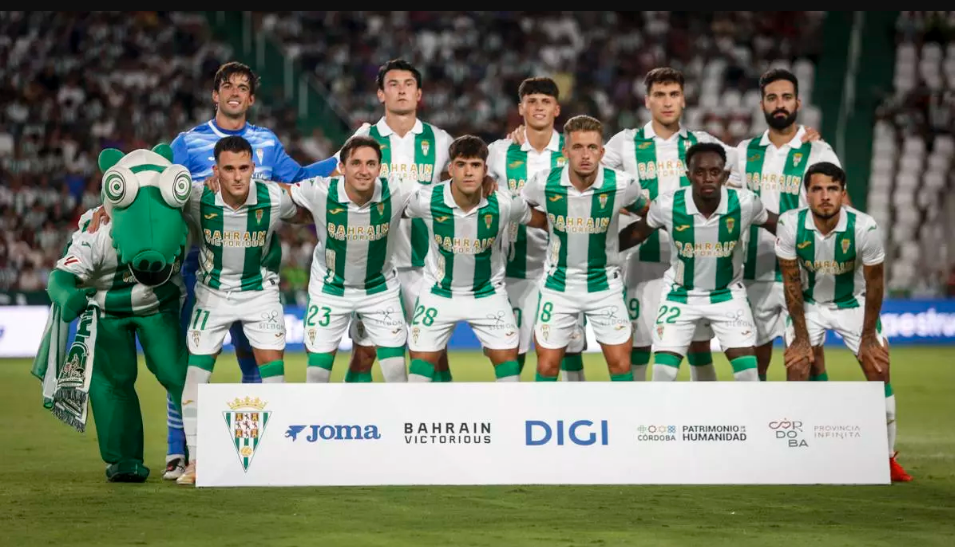

Pasión Blanquiverde
Una web hecha por y para cordobesistas. Historia, pasión, plantilla y todo lo que rodea al Córdoba Club de Fútbol.
Una web hecha por y para cordobesistas. Historia, pasión, plantilla y todo lo que rodea al Córdoba Club de Fútbol.
El Córdoba Club de Fútbol es uno de los equipos históricos de Andalucía. Una ciudad, unos colores y una afición que viven el fútbol con una pasión especial.
Pasión Blanquiverde nace como un pequeño espacio dedicado al club y a todos los cordobesistas.

Descubre nuestro estadio y uno de los lugares más especiales para el cordobesismo.
Ver estadio →Una ciudad. Una afición. Una pasión.
¡VAMOS CÓRDOBA! 💚